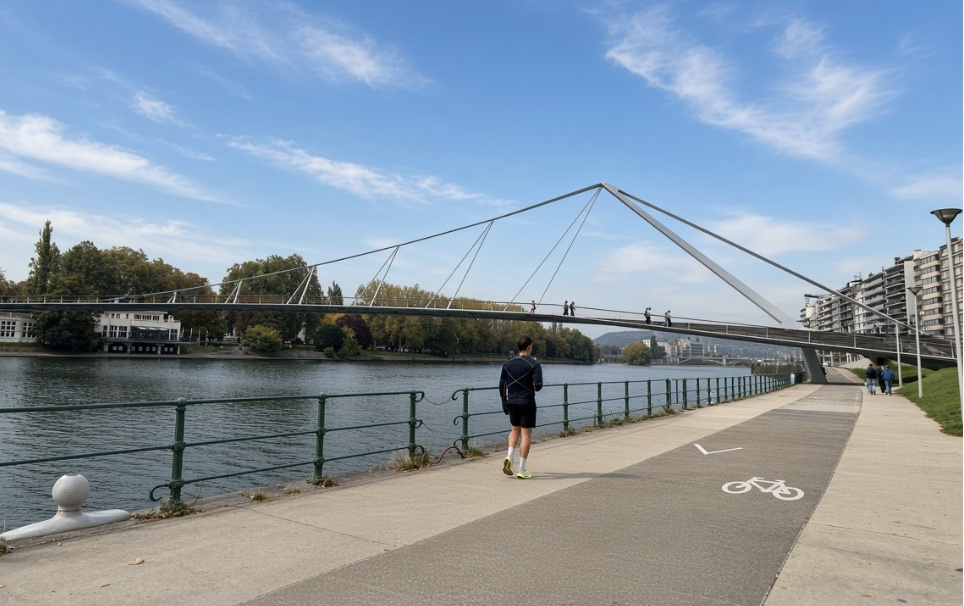

Facilities
Compare heat and air-quality outlooks around a facility or industrial campus when planning outdoor activity there.
Applications
A club organiser chooses a session window. A site manager plans demanding work. A product team adds an outlook to an app. The same heat and PM2.5 forecast answers a different question in each setting.
GOTime for outdoor movement
Choose a run, walk, ride or group session. GOTime puts the heat and PM2.5 outlook beside your plan so you can compare another time.

Decision example · Club organiser
Our Thursday session is at 18:00 and the afternoon is hot. Should we move it?
GOTime compares 18:00 with the morning and late-evening windows and shows the heat and PM2.5 outlook behind each option.
Outdoor work
For outdoor work, the analysis centres on the site and its schedule. A team can review the heat and PM2.5 outlook for planned tasks and discuss the result together.
Decision example · Site manager
Which hours this week suit the heaviest outdoor tasks at our site?
A site-level analysis sets the heat and air-quality outlook against your planned work schedule, followed by a debrief after the work.
Partner platforms
An app or wearable can show a GOTime window where a user already plans to train.
Decision example · Product team
How do we show users a better time to train inside our app?
We work with partners to place a GOTime window view beside the workout a user has scheduled.
Compare heat and air-quality outlooks around a facility or industrial campus when planning outdoor activity there.
Use population-level exposure analysis to examine environmental patterns across a portfolio or programme.
Talk to us